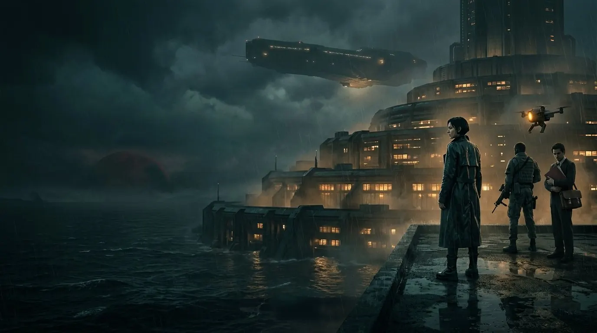
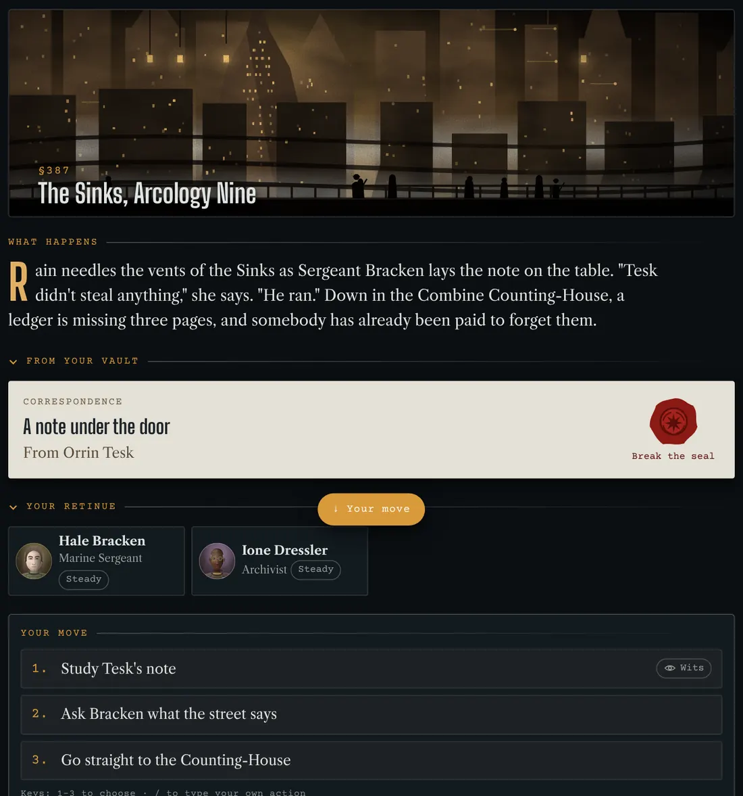
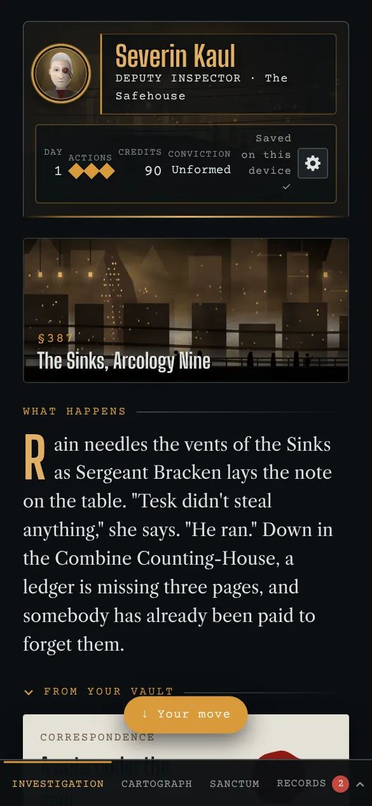
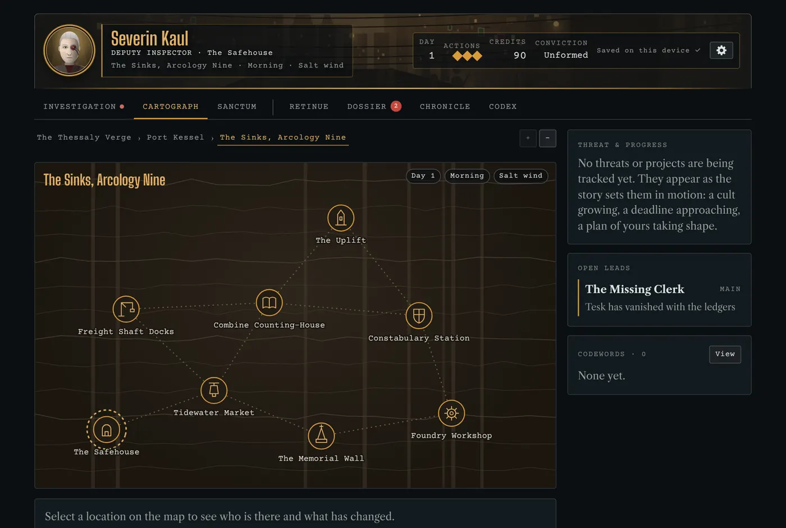
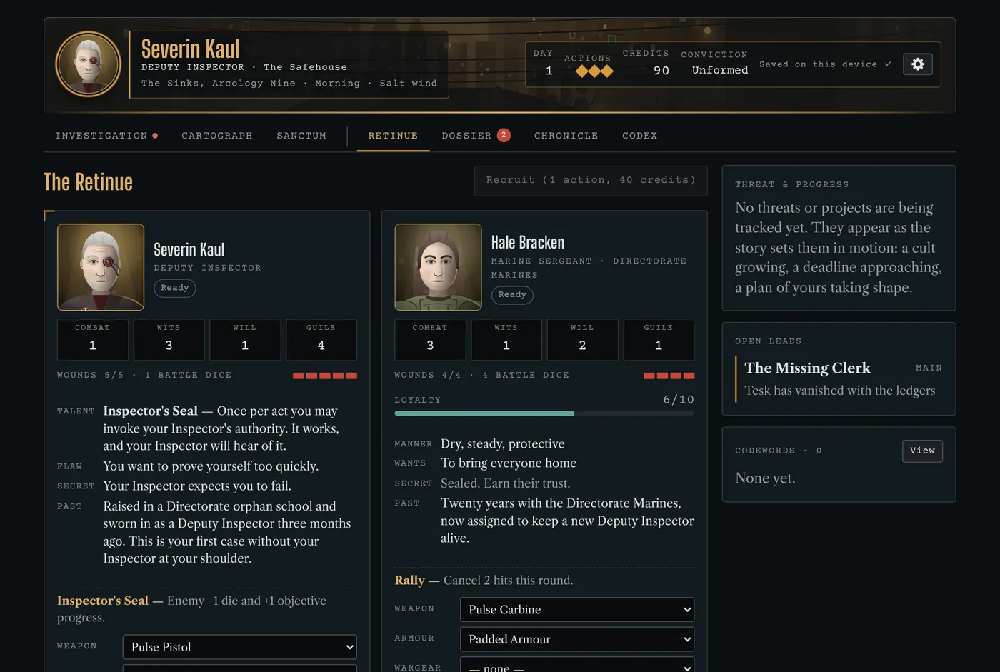

The first Chronicle setting · from 21 November
Amnesty
The Verge keeps its accounts.
A noir investigation in a frontier cluster, eighty years after the Charter War. Built into the engine, so it's ready to play from the start.

A solo roleplaying game where Claude narrates, the dice decide, and every choice changes the world your retinue walks through. Chronicle runs in your own Claude app, and a free account works.
Each scene is narrated fresh by Claude. You decide what your retinue does, the dice and your companions decide how it goes, and the world keeps the result.
An example from the first case in Amnesty. Your story will go its own way.
Companions have their own loyalties, flaws and secrets. Treat them well or badly and they act on it, sometimes by leaving.
Factions rise and fall between scenes. Threats you ignore keep ticking, and the places you visit change while you're away.
Every finished campaign is written into the setting's chronicle, so the next one starts in a world you shaped.




Each Chronicle setting is a game pack: its own places, people, factions, story and art, played with the same rules. Amnesty comes first, and more are on the way.
The Verge keeps its accounts.
A noir investigation in a frontier cluster, eighty years after the Charter War. Built into the engine, so it's ready to play from the start.
Low fantasy and age of sail settings are on the way. See what's next on the games page.
You need the Claude app or claude.ai, on a computer or a phone. A free account works.
Opens Saturday 21 November, 2:30pmA small file called Retinue.html, the Retinue game loader. On a phone, save it to your Files or Downloads.
Download Retinue.htmlStart a new chat in Claude, attach the file, and send this message with it:
Publish the attached Retinue.html exactly as it is as a new artifact, with the capabilities sample, db, user and assets (declare them as {sample:{}, db:{}, user:{}, assets:{}}). Don't change the file. It loads the game engine retinue-engine 1.0.2 from jsDelivr.
Claude makes the game as an artifact in your chat. Open it, allow what it asks for (the narrator, saving and pictures), and start your first campaign in Amnesty. Keep the artifact: it is your copy, and your saves live in it.
Stuck on "Loading the game"? Check the file was published exactly as downloaded, then reopen it. In the game, the menu has Copy details for support if you need to send me what went wrong.